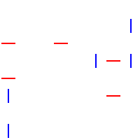
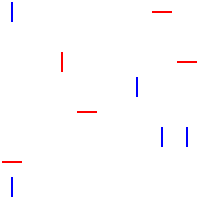

You are about to take part of an experiment to help understand how we see things.
You will be shown an image for a very short time - less than a second. You will then be asked a question about the image. You will have to repeat this many times to collect data.
In this experiment, the image is always made up of short red and
blue lines. The red lines are horizontal and
blue lines are vertical:

In some images, there will also be a red vertical line:

The question you are asked after each image is whether there was a red vertical line. To answer the question, press:
Make sure your computer screen is clear and visible. For example, make sure sunlight or dust does not make the screen hard to see. If needed, adjust the brightness of the screen. Wear glasses if you need them to see well.
You are shown images for a very short time and it may be hard to answer the question. This is OK! The experiment is hard so we could tell what people can see and what people can not see.
Spend as much time as you need for the first few questions to learn how the experiment works. Later, you can speed up. Always try your best to give the correct answer!
You should be able to tell the correct answer for some of the questions. If you can not tell the correct answer for any of first 25 questions, stop the experiment. We will not be able to use the data when there are no correct answers. We have probably made a mistake in the experiment that makes it not work well on your computer.
Start the experiment. The experiment will stop once you have collected 1000 data points. Expect to spend about 30 minutes on this.
Thank you for participating!